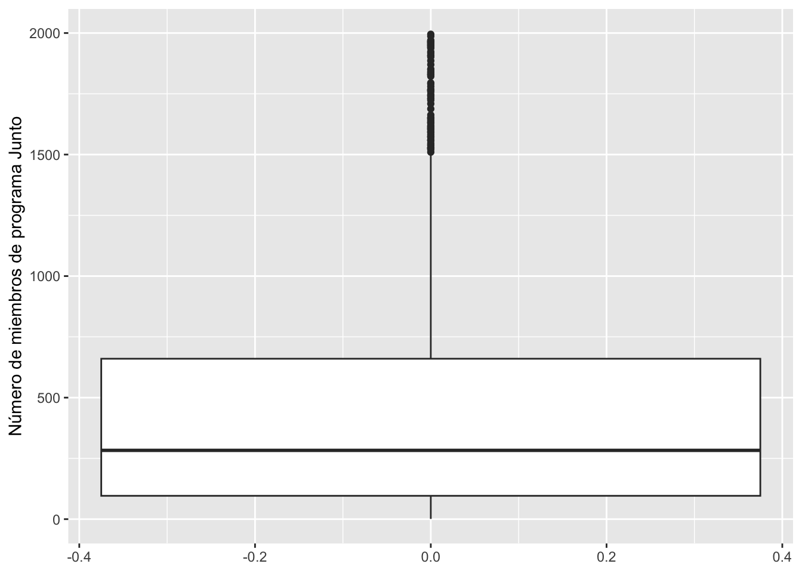
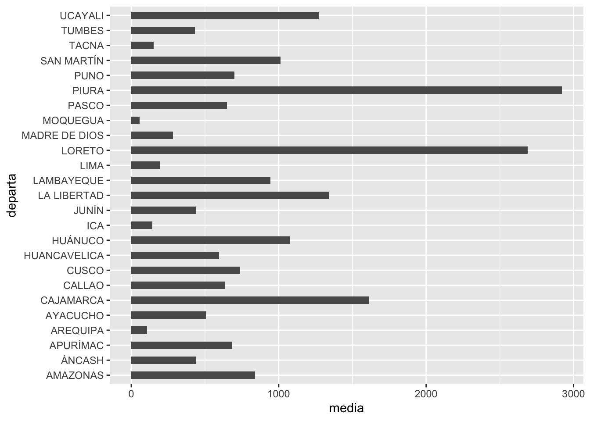
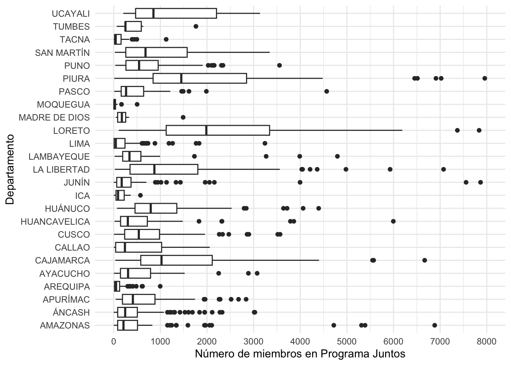
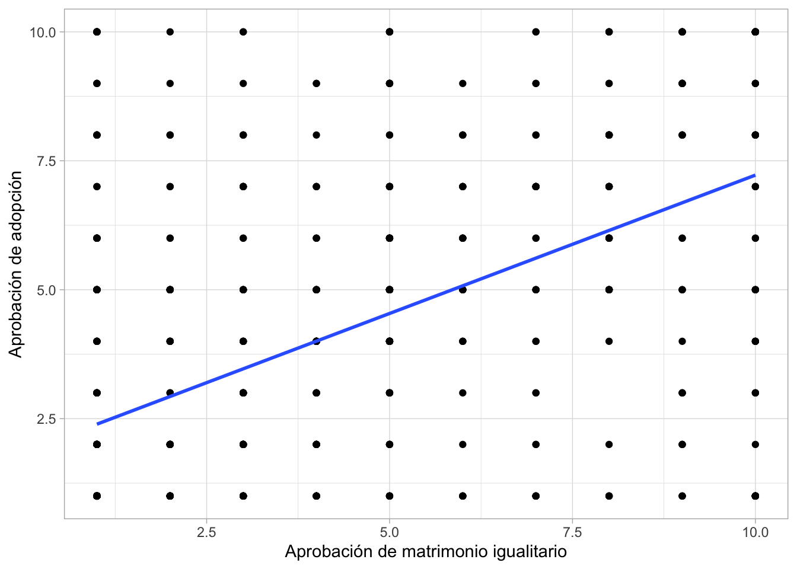
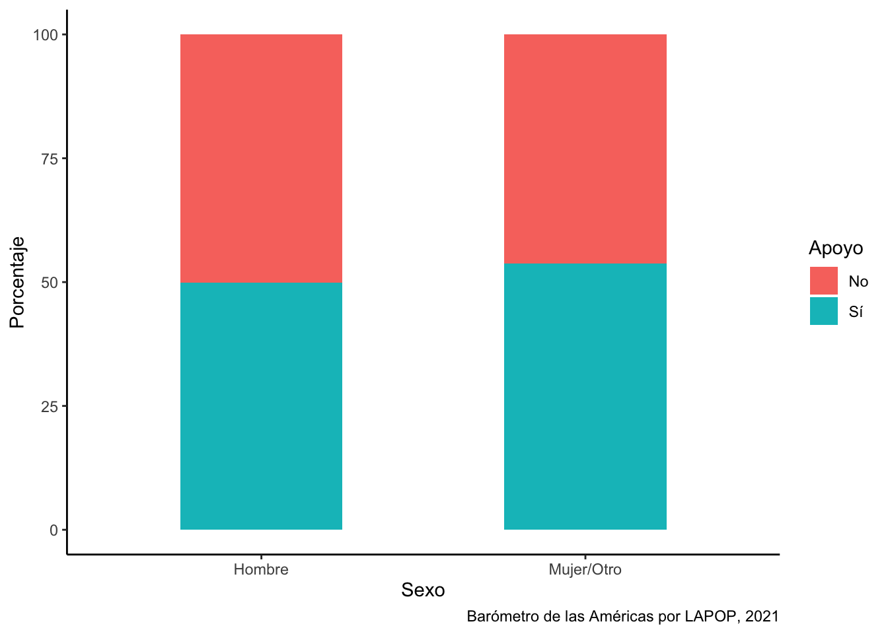

Repaso
Introducción
En este documento se repasará los principales conceptos y procedimientos vistos en la primera mitad del curso.
library(rio)
data = import("bases/congresistas.xlsx")Variable numérica
Descripción
Cuál es el promedio de edad de un congresista peruano?
library(tidyverse)
tabla1 = data |>
summarise(minimo = min(ed), media = mean(ed),
mediana = median(ed),
maximo = max(ed), desviacion = sd(ed))
tabla1## minimo media mediana maximo desviacion
## 1 27 48.5 48 78 11.16421Visualización
library(ggplot2)
graf1 = ggplot(data, aes(x=ed))+
geom_histogram(binwidth = 5)+
geom_vline(xintercept = mean(data$ed), color = "red")+
geom_vline(xintercept = median(data$ed), color = "green")+
xlab("Edad") +
ylab("Frecuencia")+
theme_minimal()
graf1
Comparación descriptiva entre grupos
Existe diferencia entre las edad de congresistas hombres y mujeres?
data = data |>
mutate(sexcong = factor(sex, labels=c("Hombre", "Mujer")))tabla2 = data |>
group_by(sexcong) |>
summarise(minimo = min(ed), media = mean(ed),
mediana = median(ed),
maximo = max(ed), desviacion = sd(ed))
tabla2## # A tibble: 2 × 6
## sexcong minimo media mediana maximo desviacion
## <fct> <dbl> <dbl> <dbl> <dbl> <dbl>
## 1 Hombre 28 48.6 46.5 78 11.0
## 2 Mujer 27 48.1 50 71 11.8Visualización de la comparación
graf3 = ggplot(data, aes(y=ed, x=sexcong))+
geom_boxplot()+
ylab("Edad")+
xlab("Sexo")+
theme_minimal()
graf3
Ejemplo 1: variable numérica
Base de datos
En esta base usaremos una base de datos de hogares afiliados y abonados al programa Juntos. Como se indica en la página de Datos Abiertos, “Esta información del Programa Juntos, es generada de manera bimestral a nivel de distrito, considerando datos sobre la cantidad de hogares afiliados, cantidad de hogares abonados, número de miembros objetivos y los montos transferidos por los conceptos de afiliación y cumplimiento de corresponsabilidad base en el periodo”.
library(rio)
juntos = import("juntos.xlsx")Describir una variable numérica
library(tidyverse)
juntos = juntos |>
mutate(tranxpob = transfer/Poblacion)tabla1 = juntos |>
summarise(minimo = min(tranxpob), media = mean(tranxpob),
mediana = median(tranxpob),
maximo = max(tranxpob), desviacion = sd(tranxpob))
tabla1## minimo media mediana maximo desviacion
## 1 0 10.01723 9.668669 50.66124 7.965191tabla2 = juntos |>
filter(tranxpob == 0)
tabla2## Ubigeo num periodo ubigeo dpto prov dist afil
## 1 110405 1033 2023-1 110405 ICA PALPA TIBILLO 1
## 2 120429 1119 2023-1 120429 JUNÍN JAUJA SAN PEDRO DE CHUNÁN 1
## 3 150104 1290 2023-1 150104 LIMA LIMA BARRANCO 1
## 4 150105 1291 2023-1 150105 LIMA LIMA BREÑA 1
## 5 150120 1305 2023-1 150120 LIMA LIMA MAGDALENA DEL MAR 1
## 6 150127 1310 2023-1 150127 LIMA LIMA PUNTA NEGRA 1
## 7 150609 1362 2023-1 150609 LIMA HUARAL SAN MIGUEL DE ACOS 1
## 8 150610 1363 2023-1 150610 LIMA HUARAL SANTA CRUZ DE ANDAMARCA 1
## 9 150702 1367 2023-1 150702 LIMA HUAROCHIRÍ ANTIOQUÍA 4
## 10 150703 1368 2023-1 150703 LIMA HUAROCHIRÍ CALLAHUANCA 1
## abon miembros transfer Poblacion Superficie Y X tranxpob
## 1 0 3 0 316 328.04 -14.0931 -75.1728 0
## 2 0 3 0 839 8.44 -11.7247 -75.4894 0
## 3 0 2 0 29424 3.33 -12.1494 -77.0247 0
## 4 0 1 0 75882 3.22 -12.0567 -77.0536 0
## 5 0 1 0 55786 3.61 -12.0967 -77.0747 0
## 6 0 5 0 8500 130.50 -12.3661 -76.7947 0
## 7 0 1 0 777 48.16 -11.2736 -76.8214 0
## 8 0 2 0 1469 216.92 -11.1947 -76.6336 0
## 9 0 10 0 1246 387.98 -12.0814 -76.5133 0
## 10 0 2 0 4357 57.47 -11.8275 -76.6203 0library(ggplot2)
graf1 = ggplot(juntos, aes(x=tranxpob))+
geom_histogram()+
geom_vline(xintercept = mean(juntos$tranxpob), color = "red")+
geom_vline(xintercept = median(juntos$tranxpob), color = "green")+
xlab("Gasto per cápita de programa Juntos") +
ylab("Frecuencia")+
theme_minimal()
graf1## `stat_bin()` using `bins =
## 30`. Pick better value with
## `binwidth`.
juntos = juntos |>
mutate(limaprov = case_when(
prov == "LIMA" ~ 1,
prov != "LIMA" ~ 0
))tabla2 = juntos |>
group_by(limaprov) |>
summarise(minimo = min(tranxpob),
media = mean(tranxpob),
mediana = median(tranxpob),
desviacion = sd(tranxpob),
maximo = max(tranxpob))
tabla2## # A tibble: 2 × 6
## limaprov minimo media mediana desviacion maximo
## <dbl> <dbl> <dbl> <dbl> <dbl> <dbl>
## 1 0 0 10.2 9.96 7.92 50.7
## 2 1 0 0.115 0.0748 0.157 0.629Esta base de datos incluye la variable acerca del número de población objetivo por distrito (variable “miembros”). Queremos tener una idea acerca de la magnitud de este programa. Para esto describimos la variable.
tabla1 = juntos |>
summarise(minimo = min(miembros), media = mean(miembros),
mediana = median(miembros),
maximo = max(miembros), desviacion = sd(miembros),
IQR(miembros))
tabla1## minimo media mediana maximo desviacion IQR(miembros)
## 1 1 806.4546 348.5 17518 1354.163 817Se observa que la mediana es de aproximadamente 340 miembros por distrito. Esta es la magnitud de atención estándar de este programa a lo largo del Perú. Sin embargo, la media es de poco más de 800 miembros, lo que indica que existen distritos con una alta carga de miembros, que podrían considerarse atípicos, y que sesgan la media hacia los valores altos.
Graficando una variable numérica
library(ggplot2)
graf1 = ggplot(juntos, aes(x=miembros))+
geom_histogram(binwidth = 100)+
geom_vline(xintercept = 801.2, color = "red")+
geom_vline(xintercept = 339.5, color = "green")+
xlab("Número de miembros programa Juntos") +
ylab("Frecuencia")+
theme_minimal()
graf1
El histograma permite distinguir esta situación más claramente. Vemos que los distritos en el Perú generalmente acumulan menos de 5000 usuarios. Son raros y puntuales los distritos con más usuarios.
graf2 = ggplot(juntos, aes(y=miembros))+
geom_boxplot()+
ylab("Número de miembros de programa Junto")+
scale_y_continuous(limits = c(0, 2000), breaks = seq(0, 2000, 500))
graf2## Warning: Removed 195 rows containing
## non-finite outside the scale
## range (`stat_boxplot()`).
Comparando descriptivos
juntos = juntos |>
mutate(departa = as.factor(dpto))tabla2 = juntos |>
group_by(departa) |>
summarise(media = mean(miembros), desviacion = sd(miembros),
mediana = median(miembros))
tabla2## # A tibble: 25 × 4
## departa media desviacion mediana
## <fct> <dbl> <dbl> <dbl>
## 1 AMAZONAS 838. 1700. 214
## 2 ÁNCASH 439. 555. 246
## 3 APURÍMAC 685. 687. 411
## 4 AREQUIPA 107. 151. 51
## 5 AYACUCHO 507. 538. 308
## 6 CAJAMARCA 1614. 1683. 1036
## 7 CALLAO 635. 840. 240.
## 8 CUSCO 739. 714. 538.
## 9 HUANCAVELICA 594. 856. 303
## 10 HUÁNUCO 1078. 919. 794
## # ℹ 15 more rowsComparando descriptivos gráficamente
graf3 = ggplot(tabla2, aes(x=media, y=departa))+
geom_bar(stat="identity", width=0.5)
graf3
graf4 = ggplot(juntos, aes(y=miembros, x=departa))+
geom_boxplot()+
scale_y_continuous(limits = c(0, 8000), breaks = seq(0, 8000, 1000))+
ylab("Número de miembros en Programa Juntos")+
xlab("Departamento")+
theme_minimal()+
coord_flip()
graf4## Warning: Removed 12 rows containing
## non-finite outside the scale
## range (`stat_boxplot()`).
juntos = juntos |>
mutate(region = case_when(
dpto=="AMAZONAS"~"Selva",
dpto=="ÁNCASH"~"Sierra",
dpto=="APURÍMAC"~"Sierra",
dpto=="AREQUIPA"~"Sierra",
dpto=="AYACUCHO"~"Sierra",
dpto=="CAJAMARCA"~"Sierra",
dpto=="CUSCO"~"Sierra",
dpto=="CALLAO"~"Costa",
dpto=="HUANCAVELICA"~"Sierra",
dpto=="HUÁNUCO"~"Selva",
dpto=="ICA"~"Costa",
dpto=="JUNÍN"~"Sierra",
dpto=="LA LIBERTAD"~"Costa",
dpto=="LAMBAYEQUE"~"Costa",
dpto=="LIMA"~"Costa",
dpto=="LORETO"~"Selva",
dpto=="MADRE DE DIOS"~"Selva",
dpto=="MOQUEGUA"~"Costa",
dpto=="PASCO"~"Sierra",
dpto=="PIURA"~"Costa",
dpto=="PUNO"~"Sierra",
dpto=="SAN MARTÍN"~"Selva",
dpto=="TACNA"~"Costa",
dpto=="TUMBES"~"Costa",
dpto=="UCAYALI"~"Selva"
)) tabla3 =juntos |>
group_by(region) |>
summarise(media = mean(miembros), desviacion = sd(miembros))
tabla3## # A tibble: 3 × 3
## region media desviacion
## <chr> <dbl> <dbl>
## 1 Costa 861. 1803.
## 2 Selva 1246. 1627.
## 3 Sierra 650. 955.graf5 = ggplot(juntos, aes(y=miembros, x=region))+
geom_boxplot()+
scale_y_continuous(limits = c(0, 4000), breaks = seq(0, 4000, 500))+
ylab("Número de miembros en Programa Juntos")+
xlab("Departamento")+
theme_minimal()
graf5## Warning: Removed 53 rows containing
## non-finite outside the scale
## range (`stat_boxplot()`).
Comparando grupos mediante intervalos de confianza
library(lsr)
ciMean(juntos$miembros)## 2.5% 97.5%
## [1,] 744.7408 868.1685miembrosxreg = juntos |>
group_by(region) |>
summarise(Media = mean(miembros, na.rm=T),
min = ciMean(miembros, na.rm=T)[1],
max = ciMean(miembros, na.rm=T)[2]
)
miembrosxreg## # A tibble: 3 × 4
## region Media min max
## <chr> <dbl> <dbl> <dbl>
## 1 Costa 861. 694. 1028.
## 2 Selva 1246. 1069. 1423.
## 3 Sierra 650. 593. 707.graf6 = ggplot(miembrosxreg, aes(x=region, y=Media))+
geom_bar(stat="identity")+
geom_errorbar(aes(ymin=min, ymax=max), width=0.2)+
geom_text(aes(label=paste(round(Media, 1))), vjust=-3.5, size=4)+
xlab("Region") + ylab("Miembros de Programa Juntos")+
ylim(0, 1500)
graf6
NO VIENE EN EL PARCIAL 2024-1 Pruebas de significancia
anova1 = aov(juntos$miembros~juntos$region)
summary(anova1)## Df Sum Sq Mean Sq F value Pr(>F)
## juntos$region 2 9.052e+07 45261516 25.33 1.4e-11 ***
## Residuals 1849 3.304e+09 1786782
## ---
## Signif. codes: 0 '***' 0.001 '**' 0.01 '*' 0.05 '.' 0.1 ' ' 1compara = TukeyHSD(anova1)
compara## Tukey multiple comparisons of means
## 95% family-wise confidence level
##
## Fit: aov(formula = juntos$miembros ~ juntos$region)
##
## $`juntos$region`
## diff lwr upr p adj
## Selva-Costa 384.6268 156.6965 612.55703 0.0002312
## Sierra-Costa -210.9734 -386.8764 -35.07042 0.0137307
## Sierra-Selva -595.6002 -793.8417 -397.35872 0.0000000compara.df = as.data.frame(compara[1])
compara.df$compara = rownames(compara.df)graf7 = ggplot(compara.df, aes(x=compara, y=juntos.region.diff))+
geom_errorbar(aes(ymin=juntos.region.lwr, ymax=juntos.region.upr), width=0.2)+
geom_text(aes(label=paste(round(juntos.region.diff, 1))), vjust=-1, size=3)+
xlab("Comparación") + ylab("Diferencia")+
ylim(-800, 700) +
coord_flip() +
geom_hline(yintercept = 0, color = "red", linetype="dotted") +
theme_classic()
graf7
Ejemplo 2: variable categórica
library(rio)
peru = import("PER_2021_LAPOP_AmericasBarometer_v1.2_w.dta")Describir una variable categórica
library(tidyverse)
peru = peru |>
mutate(ing4rec=recode(ing4, '5' = '1', '6' = '1', '7' = '1', .default = '0'))table(peru$ing4)##
## 1 2 3 4 5 6 7
## 291 216 407 546 757 347 458table(peru$ing4rec)##
## 0 1
## 1460 1562peru = peru |>
mutate(ing4rec = factor(ing4rec, labels=c("No", "Sí")))tabla4 = peru |>
filter(ing4rec == "No" | ing4rec == "Sí") |>
count(apoyo = ing4rec, name="Frecuencia") |>
mutate(Porcentaje = (Frecuencia / sum(Frecuencia)*100 ))
tabla4## apoyo Frecuencia Porcentaje
## 1 No 1460 48.31238
## 2 Sí 1562 51.68762Graficar una variable categórica
graf8 = ggplot(tabla4, aes(y=Porcentaje, x=apoyo))+
geom_bar(stat="identity", width=0.5)
graf8
Comparando proporciones
peru = peru |>
mutate(sexo=recode(q1tb, '1' = '1', '2' = '2', '3' = '2')) |>
mutate(sexo = factor(sexo, labels=c("Hombre", "Mujer/Otro")))tabla5 = peru |>
filter(ing4rec == "No" | ing4rec == "Sí") |>
group_by(sexo) |>
count(Apoyo = ing4rec, name="N")|>
mutate(total = sum(N),
Por = N / total * 100,
err = sqrt(Por*(100-Por)/N),
liminf = Por - 1.96*err,
limsup = Por + 1.96*err)
tabla5## # A tibble: 4 × 8
## # Groups: sexo [2]
## sexo Apoyo N total Por err liminf limsup
## <fct> <fct> <int> <int> <dbl> <dbl> <dbl> <dbl>
## 1 Hombre No 807 1610 50.1 1.76 46.7 53.6
## 2 Hombre Sí 803 1610 49.9 1.76 46.4 53.3
## 3 Mujer/Otro No 653 1412 46.2 1.95 42.4 50.1
## 4 Mujer/Otro Sí 759 1412 53.8 1.81 50.2 57.3Comparando proporciones gráficamente
graf9 = ggplot(tabla5, aes(x=sexo, y=Por, fill=Apoyo))+
geom_bar(stat="identity", width=0.5)+
labs(x="Sexo", y="Porcentaje",
caption="Barómetro de las Américas por LAPOP, 2021")+
theme_classic()
graf9
Comparando proporciones con intervalos de confianza
tabla5 = tabla5[-c(1,3),]graf10 = ggplot(tabla5, aes(x=sexo, y=Por))+
geom_bar(stat="identity")+
geom_errorbar(aes(ymin=liminf, ymax=limsup), width=0.2)+
geom_text(aes(label=paste(round(Por, 1))), vjust=-1.5, size=4)+
labs(x="Sexo", y="Porcentaje",
caption="Barómetro de las Américas por LAPOP, 2021")+
theme_classic()
graf10
Prueba de significancia para proporciones
prop.test(c(803, 759), c(1610,1412))##
## 2-sample test for equality of proportions with continuity correction
##
## data: c(803, 759) out of c(1610, 1412)
## X-squared = 4.3759, df = 1, p-value = 0.03645
## alternative hypothesis: two.sided
## 95 percent confidence interval:
## -0.075118749 -0.002436544
## sample estimates:
## prop 1 prop 2
## 0.4987578 0.5375354